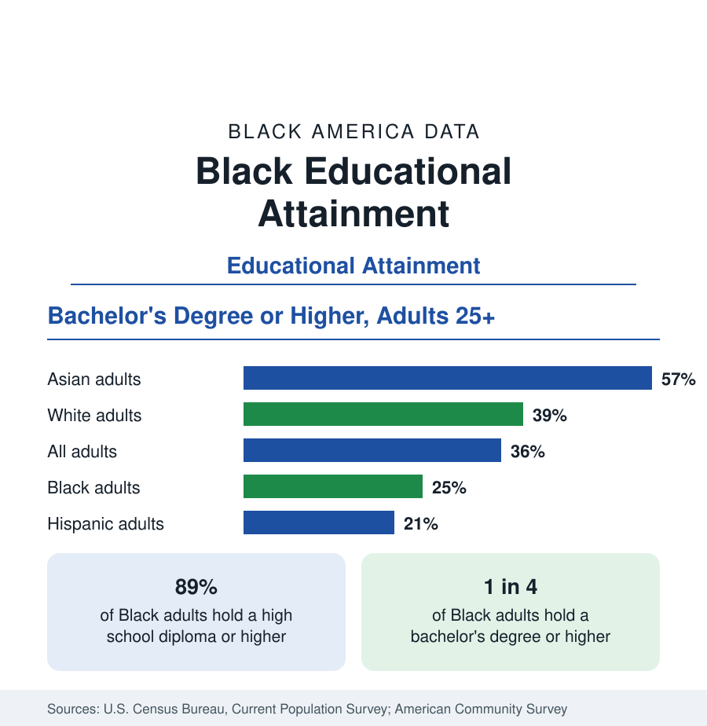

Black Education
Black Educational Attainment: High School Parity, the College Gap
About 89 percent of Black adults hold a high school diploma and one in four holds a bachelor's degree or higher — the attainment ladder, the college completion gap, and the generational trend.

Educational attainment — the highest level of schooling a person has completed — is among the most consequential statistics in American demographic data, because it predicts earnings, employment, health, and wealth more reliably than almost any other single measure. For Black adults aged 25 and over, the Census Bureau's surveys record a population that has reached near-parity in high school completion while remaining well behind national rates in college completion: about 89 percent hold a high school diploma or higher, and about 25 percent — one in four — hold a bachelor's degree or higher. This article reports the attainment data, the comparisons it supports, and the trend behind it.
The Attainment Ladder
Attainment is measured in steps. At the first step, high school completion, Black adults stand at about 89 percent, close to the national figure of about 90 percent — a convergence that is historically recent and remarkable, given that as late as the mid-twentieth century a majority of Black adults had not completed high school. At the second step, some college or an associate degree, roughly another quarter of Black adults stand. At the third step, the bachelor's degree, the Black figure of about 25 percent separates from the national figure of about 36 percent and the non-Hispanic White figure of about 39 percent. At the top step, advanced degrees — master's, professional, and doctoral — about one in ten Black adults holds one, against roughly one in seven adults nationally.
The Comparison in Full
Placed alongside the other groups the Census Bureau reports, the bachelor's-degree ordering reads: Asian adults at roughly 57 percent, non-Hispanic White adults at 39 percent, all adults at 36 percent, Black adults at 25 percent, and Hispanic adults at about 21 percent. Two features of this ordering matter for interpretation. The Black rate is not the lowest, and the distance between the Black rate and the national rate — about eleven points — is concentrated entirely at the college steps, not at high school completion. Analysts accordingly describe the Black attainment gap as a college completion gap, not a general schooling gap: the divergence happens between enrollment and graduation, a distinction the enrollment and graduation articles in this section take up separately.
Age Changes the Picture
Averages across all adults 25 and over blend generations educated under very different conditions, and the age breakdown tells a more dynamic story. Younger Black adults — those aged 25 to 34 — record bachelor's-degree rates several points above the all-ages Black figure, reflecting the expansion of Black college enrollment over recent decades. Older Black adults, educated when segregated and under-resourced schooling was still living memory in much of the country, record rates far below it. The overall Black attainment figure therefore rises mechanically over time as younger, better-credentialed cohorts replace older ones, even in years when nothing else changes — a composition effect that readers should keep in mind when a new survey shows improvement.
Women and Men
Within the Black population, attainment is led by women. Black women hold bachelor's degrees at rates several points above Black men, earn roughly two-thirds of the bachelor's degrees awarded to Black students each year, and hold a similar majority of Black master's degrees. The divergence begins early — in high school completion, college enrollment, and persistence — and widens at each step of the ladder. This gender pattern, one of the most consistent in the education data, shapes the related articles in this section on enrollment, HBCUs, and fields of study, and it interacts with the employment section's earnings data, where credentialed Black women's outcomes still trail those of comparably credentialed men.
What Attainment Buys
The reason attainment anchors this section is its measurable payoff, documented in the labor data. Median earnings rise steeply with each step of the ladder for Black workers, as they do for all workers, and unemployment falls: Black bachelor's-degree holders record unemployment rates a fraction of those of Black workers without diplomas. Yet the payoff is not equal — at every rung, Black workers earn less than White workers with the same credential, the finding detailed in the employment section. Attainment is thus best read as necessary but not sufficient: it moves Black outcomes substantially, and it does not by itself close the gaps that the rest of this reference measures.
The summary is two facts held together. Black adults have essentially completed the high school project — about nine in ten hold diplomas — and remain, at about one in four, well short of national rates of college completion, with the shortfall produced between enrollment and graduation and narrowing generation by generation. The articles that follow examine each component: enrollment, historically Black colleges and universities, graduation rates, fields of study, student debt, and the graduate and professional pipeline.
More in Black Education
Historically Black Colleges and Universities: Enrollment and Degrees
More than 100 HBCUs enroll roughly 290,000 students and award about one in six Black bachelor's degrees — an outsized share from a small sector. The federal education data.
Black College Enrollment: 2.4 Million Students
About 2.4 million Black students are enrolled in American colleges — nearly two-thirds of them women. The NCES enrollment data by sector, level, and trend.
Black Student Loan Debt: Borrowing More, Owing Longer
More than four in five Black bachelor's graduates borrow — and four years out they owe about $25,000 more than White graduates. The debt data behind the attainment numbers.
Source: U.S. Census Bureau, Current Population Survey, Educational Attainment Supplement; American Community Survey.